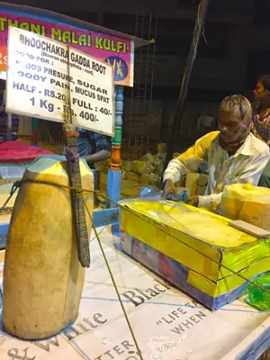

pranet · 出典付きの植物図鑑
భూచక్రగడ్డ
Maerua oblongifolia (Forssk.) A.Rich. · Capparaceae

Maerua oblongifolia is a low woody bushy under-shrub sometimes scandent to 2–3 meters high, with a thick root stock and thick leaves, and strongly scented flowers, occurring in India, Pakistan, Africa and Saudi Arabia. In Telugu this plant is known as Bhoochakra gadda and also as Bhoochakra dumpa. In kannada its called Bhoo Chakra Gedde ಭೂಚಕ್ರ ಗೆಡ್ಡೆ, In Tamil this plant is called Poomicchakkarai Kizhangu. This is a tuber that naturally grows in areas closer to fountains, especially in hills. Local Tribes and others collect the tubers, which are then sold in many Indian town and cities as a quick street food.
出典: Wikipedia (en): Maerua oblongifolia · CC BY-SA 4.0
異名: Capparis heteroclita Roxb., Capparis heterogenea Roxb. ex Steud., Capparis mithridatica Forssk., Capparis oblongifolia Forssk., Crateva oblongifolia (Forssk.) Spreng., Maerua albomarginata Gilg & Gilg-Ben., Maerua amphilahensis A.Terracc., Maerua angustifolia A.Rich., Maerua dasyura Gilg & Gilg-Ben., Maerua dolichobotrys Gilg & Gilg-Ben., Maerua erythreae Gilg & Gilg-Ben. ex Engl., Maerua lanzae Fiori, Maerua ovalifolia Cambess., Maerua racemosa Lanza, Maerua rogeonii A.Chev., Maerua scabra Cambess., Maerua scebelensis Chiov., Maerua virgata Gilg, Niebuhria arenaria DC., Niebuhria oblongifolia (Forssk.) DC.
同定や利用は自己責任でお願いします。この図鑑だけを根拠に野生の植物を食べないでください。
出典
- 学名: World Flora Online Plant List 2026-06 · CC0 1.0
- 名前: Wikipedia の記事名と Wikidata · CC0 1.0（Wikidata）。記事名は事実
- 説明: Wikipedia (en): Maerua oblongifolia · CC BY-SA 4.0
- 食用・毒性: World Checklist of Useful Plant Species (Diazgranados et al. 2020, RBG Kew) · CC BY 4.0
- 分布: World Checklist of Vascular Plants (WCVP), RBG Kew, version 2026-06-04 · CC BY 3.0
このページは pranet のデータから自動生成しています。コードは MIT、データは項目ごとのライセンス（説明）。